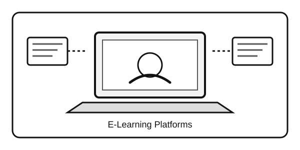

أولاً: المقدمة
أصبحت منصات التعلم الإلكتروني من الأدوات المهمة في التعليم الحديث؛ إذ تتيح للطلاب الوصول إلى الدروس والأنشطة والمواد التعليمية عبر الإنترنت، كما تساعد المعلمين على تنظيم المحتوى ومتابعة أداء الطلاب والتواصل معهم. ويعرض هذا التقرير مفهوم هذه المنصات وطريقة عملها وأهم أدوارها ومميزاتها والتحديات المرتبطة بها.
ثانياً: عرض الموضوع
1. مفهوم منصات التعلم الإلكتروني
منصة التعلم الإلكتروني هي بيئة رقمية تستخدم الإنترنت لتقديم المحتوى التعليمي وإدارة الأنشطة والتواصل بين المعلم والطالب. وقد تحتوي على محاضرات مسجلة، وملفات للقراءة، واختبارات إلكترونية، وواجبات، وأدوات لمتابعة الدرجات والتقدم. ومن أمثلتها Google Classroom وMoodle.
2. كيف تعمل المنصات التعليمية؟
ينشئ المعلم صفاً أو مقرراً على المنصة، ثم يضيف الدروس والملفات والواجبات ويحدد مواعيد التسليم. ويستطيع الطالب الدخول إلى حسابه للاطلاع على المحتوى وإرسال التكليفات ومراجعة الملاحظات والدرجات. وتُعرض هذه المواد عبر المتصفح أو التطبيق باستخدام الإنترنت.
3. دور منصات التعلم الإلكتروني في العملية التعليمية
- إتاحة المحتوى: الوصول إلى الدروس والملفات التعليمية في أوقات مختلفة.
- تنظيم التعلم: جمع الدروس والواجبات والإعلانات في مكان واحد.
- تعزيز التواصل: تسهيل التواصل بين المعلم والطلاب عبر التعليقات والرسائل.
- متابعة الأداء: تسليم الواجبات إلكترونياً وعرض النتائج والملاحظات.
- دعم التعلم الذاتي: تمكين الطالب من مراجعة المواد وفق سرعته وتنظيم وقته.
- تنويع أساليب التدريس: استخدام النصوص والصور والفيديو والاختبارات التفاعلية.
4. صورة توضيحية

5. مقارنة بين منصتين للتعلم الإلكتروني
| وجه المقارنة | Google Classroom | Moodle |
|---|---|---|
| الاستخدام الأساسي | تنظيم الصفوف والواجبات والإعلانات | إدارة المقررات والأنشطة التعليمية |
| التواصل | نشر التعليمات والتعليقات والواجبات | منتديات ومناقشات وأنشطة حسب إعداد المقرر |
| متابعة التعلم | متابعة تسليم الواجبات والدرجات | متابعة الأنشطة والاختبارات والنتائج |
6. المميزات والتحديات
من أهم المميزات سهولة الوصول إلى الموارد، وتنظيم الواجبات، وسرعة تبادل الملاحظات، وإمكانية التعلم عن بُعد. ومن التحديات ضعف الإنترنت أو عدم توفر جهاز مناسب، والحاجة إلى مهارات رقمية، واحتمال تشتت الانتباه، وضرورة حماية الحسابات والبيانات الشخصية. لذلك يعتمد نجاح المنصات على التخطيط الجيد وتوفير الدعم الفني والاستخدام المتوازن.
ثالثاً: الخاتمة
تؤدي منصات التعلم الإلكتروني دوراً مهماً في تطوير العملية التعليمية؛ فهي تسهّل الوصول إلى المعرفة وتنظم التواصل والأنشطة وتساعد على متابعة تقدم الطلاب. ويكون استخدامها أكثر فاعلية عندما يصاحبه محتوى واضح ومشاركة من المعلم والطالب واتصال مناسب بالإنترنت واهتمام بأمن المعلومات.